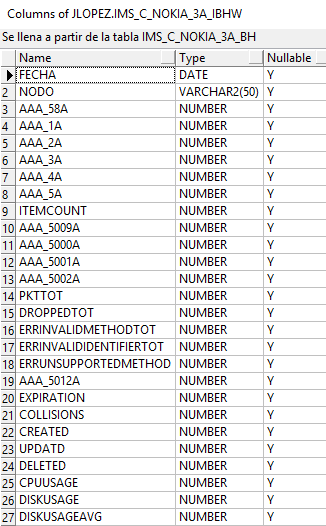
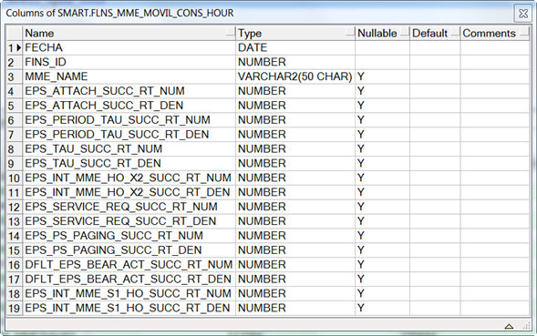
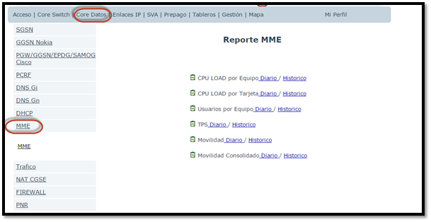
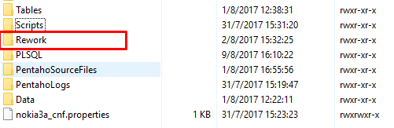

CISCO UCS¶
1. OBJETIVO¶
El presente documento buscar explicar y detallar el proceso que genera el CISCO UCS.
2. ALCANCE¶
Áreas involucradas: Performance de Red
3. DEFINICIONES¶
- Cortado: Servidor LINUX en donde se importan las MBI desde el proveedor. El nombre es cortado.claro.amx y la dirección IP física es 10.105.146.8
- Topologia de la red UCS: ToplogiaUCS
4. DESCRIPCION GENERAL¶
U.C.S : Unified Computing System
Es una plataforma de servidores fisicos utilizados para la virtualizacion de diferentes plataformas que se utilizan en claro tales como Voicemail ZTE, PNR/PCP, Spidercloud, entre otras. El objetivo de la virtualizacion es entre otros la asignacion dinamica de recursos tales como espacio en disco. Esta plataforma consta de varios servidores ubicados en cordoba, garay y torcuato.
De cisco prime se mide el throughput de las interfaces que interconectan los equipos, estos datos vienen en archivos csv. Por otro lado tambien medimos KPIs de CPU load, memoria y utilizacion de discos. Estos KPIs provienen de MIBs que se toman de cada uno de los equipos mostrados a continuacion :
Campos de la tabla TABLE UCS_VM_STORAGE_HOUR:

Campos de la tabla UCS_VM_INTERFACES_HOUR:

Campos de la tabla UCS_VM_RECURSOS_HOUR:
Campos de la tabla UCS_VM_RECURSOS_CONS_HOUR:
Campos de la tabla UCS_VM_INTERFACES_BH:

Campos de la tabla UCS_VM_STORAGE_CONS_HOUR:
Campos de la tabla UCS_VM_RECURSOS_DAY:
Campos de la tabla UCS_VM_RECURSOS_CONS_DAY:

Campos de la tabla UCS_VM_RECURSOS_BH:

Campos de la tabla UCS_VM_RECURSOS_CONS_BH:

Campos de la tabla UCS_VM_STORAGE_CONS_DAY:
Campos de la tabla UCS_VM_STORAGE_DAY:

Campos de la tabla UCS_VM_INTERFACES_DAY:

Campos de la tabla UCS_VM_STORAGE_BH:

Campos de la tabla UCS_VM_STORAGE_CONS_BH:
Campos de la tabla UCS_VM_RECURSOS_IBHW:

Campos de la tabla UCS_VM_RECURSOS_CONS_IBHW:

Campos de la tabla UCS_VM_STORAGE_IBHW:
Campos de la tabla UCS_VM_STORAGE_CONS_IBHW:

Campos de la tabla UCS_VM_INTERFACES_IBHW:

6. DESCRIPCION DETALLADA¶
6.1. Datos de Origen¶
- Server Origen
- Path y archivos

- Frecuencia actualización: Frecuencia diaria
- Tipo de Archivo: Mibs
6.2. Datos Destino¶
- Server Destino: Cortado
- Conversión de Archivos: No
- Tabla Files: No
- Tabla Auxiliar: No
- Frecuencia de corrida del proceso: 1 vez al día
- Regionales: No
- RAW Si/No: Si
- Hour Si/No: Si
- Day Si/No: Si
- BH Si/No: Si
- Países: No
- Directorio Destino (File System): /calidad/CiscoUCS/
6.3. Shell Copiar Archivos Origen a Destino y limpieza de los mismos¶
Los Scripts tienen las siguientes funciones:
1- Copiar los archivos
2- Limpieza
3- Ejecutar Pentaho
Los scripts son los siguientes:
Busy Hour, Day, ISHW
Ejecuta el proyecto en pentaho
Ejecuta el proyecto de recupero de datos.
Limpia y ejecuta el proyecto en pentaho
Llama a CiscoUCS_BHDayISHW_EndToEnd y ejecuta el proyecto en pentaho
Hour
Ejecuta el proyecto en pentajo
Ejecuta el proyecto de recupero de datos.
Limpia y ejecuta el proyecto en pentaho
Llama a CiscoUCS_Hour_EndToEnd y ejecuta el proyecto en pentaho
Reporte
Limpieza
Saca lineas innecesarias de los logs antes de ser enviados via email Params: RUTA = <PROYECTO>/PentahoLogs
Borra los logs de la carpeta <PROYECTO>/PentahoLogs cuyo tamaño es 0 o tiene una sola linea que no representa error

6.5. Pentaho¶
Estructura del proyecto:
- Proceso Pentaho End to End
BHDayISHW¶
Hour¶
Tenemos el Shell CiscoUCS_HourRun.sh que trae datos para el servidor Cortado. Luego setea variables de entorno, directorios donde se encuentran los datos para procesar los archivos disponibles.
- Pentaho Calculo Sumarizaciones
Busy Hour, Day, ISHW
Las sumarizaciones se calculan a día vencido (el día anterior al actual), para dicho cálculo se debe llamar al procedimiento G_CISCO_UCS.P_SUM_DAY_BH_IBHW_CISCOUCS.
Hour
Las sumarizaciones se calculan a día vencido (el día anterior al actual), para dicho cálculo se debe llamar al procedimiento G_CISCO_UCS.P_Calcular_hour
6.6. Controles¶

7. REPROCESO MANUAL¶
7.1 Procedimiento de reproceso manual paso a paso:¶
HOUR¶
Se debe ejecutar el script CiscoUCS_Hour_Rework.sh, el cual debe recibir por parámetro la Fecha solicitada, para realizar la limpieza, para luego ejecutar el CiscoUCS_Hour_EndToEnd.kjb en Pentaho de manera manual.
Ubicación de los scripts en la carpeta /calidad/CiscoUCS/Scripts
Ubicación del Rework de ejecución en Pentaho: /calidad/CiscoUCS/Rework
El Formato de la fecha es el siguiente:
- DD.MM.YYYY HH24
Por consola se utiliza de la siguiente manera:
- ./Pentaho61/data-integration/kitchen.sh -file=/calidad/CiscoUCS/PentahoSourceFiles/CiscoUCS_Hour_EndToEnd.kjb -param:P_FECHA_DESDE=$1 -param:P_FECHA_HASTA=$2

BH, DAY e IBHW¶
Se debe ejecutar el script CiscoUCS_BHDayISHW_Rework.sh, el cual debe recibir por parámetro la Fecha solicitada, para realizar la limpieza, para luego ejecutar el CiscoUCS_BHDayISHW_EndToEnd.kjb en Pentaho de manera manual.
Ubicación de los scripts en la carpeta /calidad/CiscoUCS/Scripts
Ubicación del Rework de ejecución en Pentaho: /calidad/CiscoUCS/Rework
El Formato de la fecha es el siguiente:
- DD.MM.YYYY
Por consola se utiliza de la siguiente manera:
- /Pentaho61/data-integration/kitchen.sh -file=/calidad/CiscoUCS/PentahoSourceFiles/CiscoUCS_BHDayISHW_EndToEnd.kjb -param:P_FECHA=$1


9. CONTROL DE CAMBIOS¶
| Fecha | Responsable | Ticket Jira | Detalle | Repositorio |
|---|---|---|---|---|